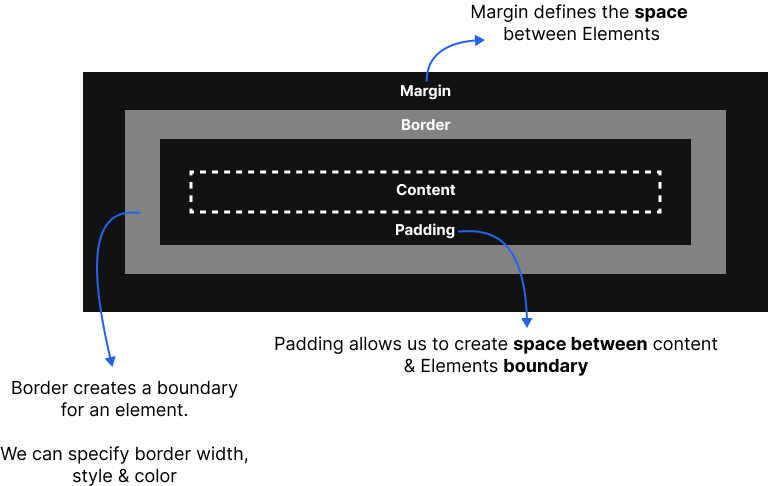
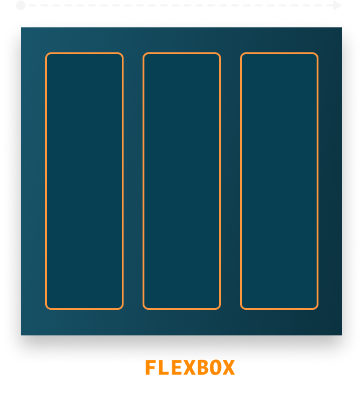
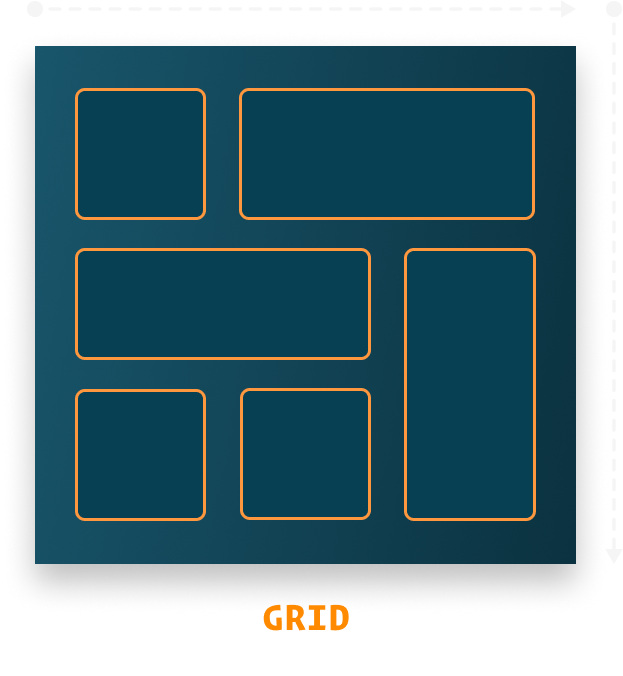

Welcome to the comprehensive CSS documentation, your go-to guide for
mastering Cascading Style Sheets. Whether you're a beginner looking
to learn the fundamentals or an experienced developer seeking
advanced techniques, this resource covers everything you need to
know about styling web pages.
Dive into topics like layout design, animations, responsive web
design, and more. Our goal is to make learning CSS efficient and
enjoyable by providing clear explanations, practical examples, and
tips for best practices. Let’s transform your ideas into beautiful,
responsive designs!
The CSS Box Model is the foundation of how elements are structured
and spaced on a webpage. It represents the space taken up by an
element, consisting of the following areas:
-
Content: The innermost area, where text or other content is
displayed.
- Padding: The space between the content and the border.
- Border: The edge surrounding the padding and content.
-
Margin: The outermost space, separating the element from others.

The CSS Cascade determines which styles are applied when multiple
rules target the same element. It resolves conflicts using priority
based on specificity, importance,
and source order.
Styles with higher specificity or marked with !important override
others. If rules have the same weight, the one defined later in the
code takes precedence.
Specificity is a hierarchy system in CSS that determines which rule
is applied when multiple rules target the same element. It assigns a
weight to selectors based on their type:
-
Inline styles (style attribute) have the highest specificity.
-
IDs (#id) have more weight than classes (.class), attributes, or
pseudo-classes (:hover).
-
Elements (e.g., div, p) and pseudo-elements (::before) have the
lowest weight.
/* Lowest specificity (element selector) */
p {
color: blue;
}
/* Higher specificity (class selector) */
.highlight {
color: green;
}
/* Even higher specificity (ID selector) */
#important {
color: red;
}
/* Highest specificity (inline style) */
In CSS, certain properties, like text-related styles (e.g., color,
font-family), are inherited by child elements from their parent.
Non-inherited properties, like margin or padding, need to be
explicitly defined for child elements.
You can force inheritance using the inherit keyword or override it
with custom values. Inheritance simplifies styling for nested
elements.
body {
color: blue; /* Inherited by child elements */
font-family: Arial, sans-serif;
}
h1 {
font-size: 2rem; /* Not inherited, defined explicitly */
}
p {
color: inherit; /* Forces inheritance */
}
Colors in CSS are used to style elements, set backgrounds, borders,
text, and more. CSS supports different types of color notations for
flexibility, allowing designers to choose based on their preferences
or requirements.
Types of Colors in CSS
-
Named Colors: Predefined color names like red, blue, green, etc.
(e.g., color: red;).
-
Hexadecimal Colors: Represented as #RRGGBB or #RGB (e.g., #FF5733
for orange).
-
RGB and RGBA: Defined by Red, Green, Blue values, with optional
Alpha for transparency (e.g., rgb(255, 87, 51) or rgba(255, 87,
51, 0.5)).
-
HSL and HSLA: Defined by Hue, Saturation, and Lightness, with
optional Alpha (e.g., hsl(11, 100%, 60%) or hsla(11, 100%, 60%,
0.5)).
.named-color {
color: red; /* Named color */
}
.hex-color {
color: #1E90FF; /* Hexadecimal color */
}
.rgb-color {
color: rgb(34, 139, 34); /* RGB color */
}
.rgba-color {
background-color: rgba(34, 139, 34, 0.5); /* RGBA with transparency */
}
.hsl-color {
color: hsl(240, 100%, 50%); /* HSL color */
}
Flexbox is a CSS layout model designed for creating flexible and
responsive one-dimensional layouts. It allows you to align and
distribute space among items within a container, either horizontally
(row) or vertically (column).

Key properties include display: flex, justify-content (for
horizontal alignment), align-items (for vertical alignment), and
flex-direction (to set row or column).
Flexbox simplifies tasks like centering content, creating
equal-width columns, or reordering elements. It works by defining a
flex container and its child flex items, which can grow, shrink, or
maintain their size based on available space.
.container {
display: flex;
justify-content: center;
align-items: center;
}
CSS Grid is a powerful two-dimensional layout system for creating
complex, grid-based designs. It allows you to define rows and
columns and place items precisely within the grid.

Key properties include display: grid,
grid-template-columns,
grid-template-rows, and gap (for
spacing between items). Grid enables responsive layouts without
relying on floats or positioning.
It works by defining a grid container and its child grid items,
which can span multiple rows or columns. Grid is ideal for building
modern, structured layouts like dashboards or magazine-style
designs.
.container {
display: grid;
grid-template-columns: 1fr 1fr 1fr;
gap: 10px;
}
Responsive Design is an approach to web development that ensures
websites adapt to different screen sizes and devices. It uses
flexible layouts, images, and CSS media queries to adjust the design
dynamically.
Media queries allow you to apply specific styles based on device
characteristics like width, height, or orientation. Key techniques
include using relative units (like percentages or em), flexible
grids, and responsive images.
The goal is to provide an optimal viewing experience across
desktops, tablets, and mobile devices. Responsive design is
essential for modern web development, improving usability and
accessibility.